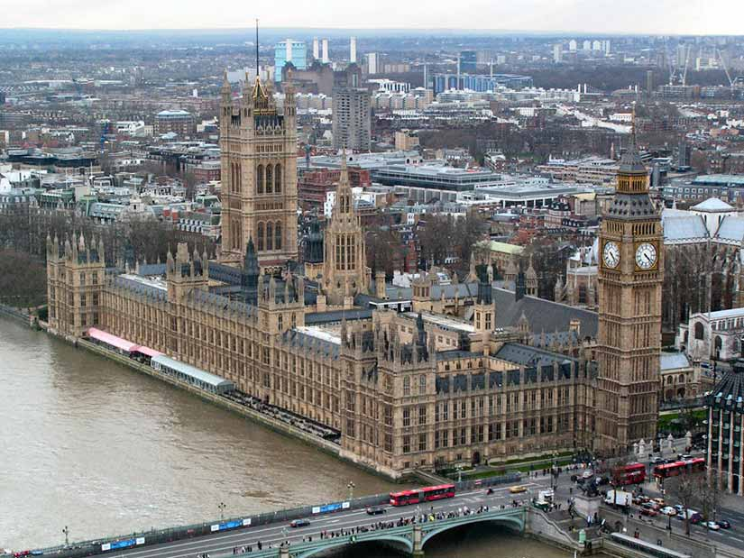

Os melhores lugares na Europa vão proporcionar uma experiência incrível a você que deseja viajar para o Velho Continente. Com facilidade de locomoção e proximidade entre muitos deles, é possível conhecer até mais de um e se maravilhar com o que vemos em filmes e fotos. Para decidir qual o destino ideal, é importante definir o objetivo da viagem, afinal as opções variam desde cidades com história milenar preservada, a praias paradisíacas e megalópoles que misturam entre o moderno e o tradicional. De todo modo, a certeza é de que você irá encontrar lugares exóticos, incríveis, paradisíacos e as cidades mais bonitas da Europa, isso sem falar nos belíssimos países tropicais do continente europeu. Neste artigo trago, em ordem, os 5 destinos que foram eleitos em pesquisa do TripAdvisor os melhores para se conhecer na Europa em 2023/2024. Mostro as principais característica de cada um e dicas de onde visitar e quais os melhores bairros para se hospedar. A Europa sempre surpreende. Confira!
Paris foi eleita, segundo a lista do TripAdvisor, a melhor cidade europeia para se visitar, pois esbanja charme, seja na arquitetura ou no vestuário das pessoas; a capital da França está situada entre as curvas do Rio Sena e possuí grande especialidade em vinhos, queijos e perfumes. As principais atrações de Paris são a Torre Eiffel, Catedral de Notre Dame, Arco do Triunfo, Champs Élysées, Museus do Louvre, Jardim de Luxemburgo e o Cemitério Pére Lachaise. Os bairros mais recomendados para hospedar-se são Latino, Les Halles e Montmartre. Veja mais dicas de atividades turísticas na França.

O centro da capital da Inglaterra é um dos principais polos comerciais do mundo, sediando algumas das principais empresas multinacionais e a capital é conhecida pela sua badalação nos bares, paixão por futebol e pelo charme da Família Real. Os principais lugares turísticos de Londres são o Big Ben, a Roda-Gigante, o Palácio de Buckingham, Torre de Londres, o Palácio de Westminster, a Catedral de St Paul’s, Piccadilly Circus e o Museu Madame Tussauds. Para aproveitar melhor a agitação londrina, hospede-se nos bairros Westminster (atrações) e Convert Garden (Lojas).
Em seguida, surge na lista dos melhores lugares na Europa o primeiro paraíso da Grécia, sendo esta a maior e mais populosa ilha do país. O local é muito preparado para o turismo, tanto que possuí três aeroportos e recebe estrangeiros do mundo todo em suas praias, principalmente em agosto, no auge do verão europeu. Seus principais pontos turísticos são: o Museu Arqueológico de Heráklion, Palácio Knóssos, Praia Elafonisi (uma das melhores do mundo), Cretaquarium, Monastério Arkadi e os Castelos Venezianos. Preste atenção quanto ao local de hospedagem, pois a ilha é grande e você pode ficar muito distante; recomenda-se que fique nos hotéis em Chania.
Na sequência da lista dos lugares na Europa, aparece certamente a capital mais lendária e repleta de histórias milenares da lista; essa é a quarta maior cidade da União Europeia e destaca-se pela riqueza arqueológica, religião, arte, moda e culinária, afinal é a terra do Spaghetti à Carbonara na Itália: Roma, a cidade eterna! Dentre os destinos turísticos de Roma, destaca-se absolutamente o Coliseu, além da Basílica de São Pedro, Pizza Veneza, Fórum Romano, Campidoglio, Panteão Romano, Fontana di Trevi e, obviamente, o Vaticano. Os principais bairros para se hospedar são Castro pretório e Trevi.
Fecho a lista com chave de ouro ao falar do charme único da capital da Holanda. A verdade é que Amsterdam possui uma arquitetura única, composta pelas suas centenas de pontes, canais marítimos e moinhos de vento; aproveite para ver de perto as tulipas, as diversas opções de compras e, obviamente, a curiosidade pelas famosas “vitrines”. Ao visitar a cidade, conheça os lugares mais visitados de Amsterdam: Rijksmuseum, a Casa de Anne Frank, o Museu Van Gogh, a Praça Dam, a Heineken Experience, o Vondelpark e o Palácio Real. Hospede-se no centro ou no bairro Jordaan.